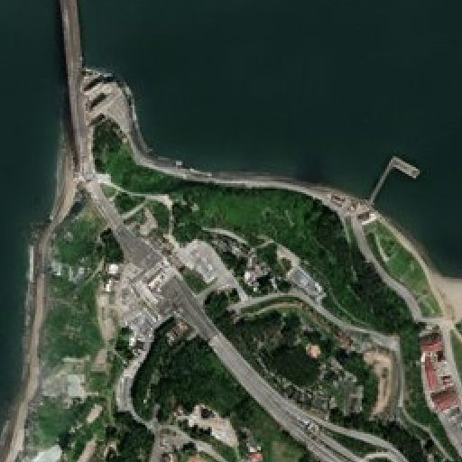
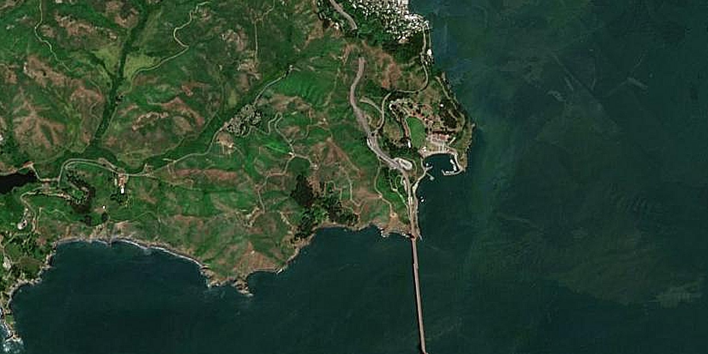
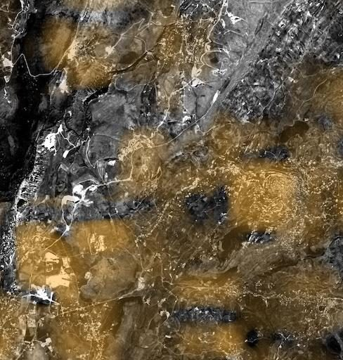

A persistent wide-area screening layer — visual, SAR, night-lights, terrain — that triggers tasking only where something changed.
Borders, coastlines and exclaves stretch for thousands of kilometres through terrain no patrol can watch continuously. The need is a persistent screening layer that covers the whole frontier every few days and flags what changed — new crossing trails, staging areas, coastal access, construction near the line — so patrols, UAVs and high-resolution tasking go to the exact point, not the whole line.
SkySpera is that layer: enhanced visual (1 m), all-weather SAR (2 m, day/night, through cloud), 25 m night-lights, and a 1 m DEM for line-of-sight and 3D — worldwide, every 2–3 days, with a decade-deep archive that establishes verifiable baselines.
Class-transition and anomaly alerts turn wide-area coverage into a monitoring service: new structures, new clearings, fresh access trails, perimeter encroachment, and dark-vessel activity at the coast — screening the entire area of interest and cueing tasking only where it matters.

Physics-enhanced true-colour — Sentinel-2 to 1 m and PlanetScope to 1.9 m — refreshed every 2–5 days (S2) to daily (PlanetScope), no hallucinations.
More info →
All-weather Sentinel-1 radar at 2 m (delivered at 1 m), every 6 days — day, night and through cloud.
More info →
A seamless, near-cloudless global basemap — 10 m source, 5 m physics-based Derived Resolution, 2.5 m Super-Resolution.
More info →
Nightly 25 m night-lights, super-resolved from NASA Black Marble, for power, outage and activity tracking.
More info →
Upload your own scene — ×2 Refined Reality, ×4 Super Resolution, or PlanetScope 1.9 m — from virtually any sensor.
More info →
Live vessel tracks (AIS) overlaid on cloud-piercing SAR — every ship that reports, and the ones that don't.
More info →
Continuous watch over pipelines, transmission lines, railways and borders for encroachment and change.
More info →A continuously refreshed 2.5 m basemap — hourly-updated, always the freshest pixel.
More info →Tell us your area of interest and we'll show you what SkySpera can do with it.
Talk to us